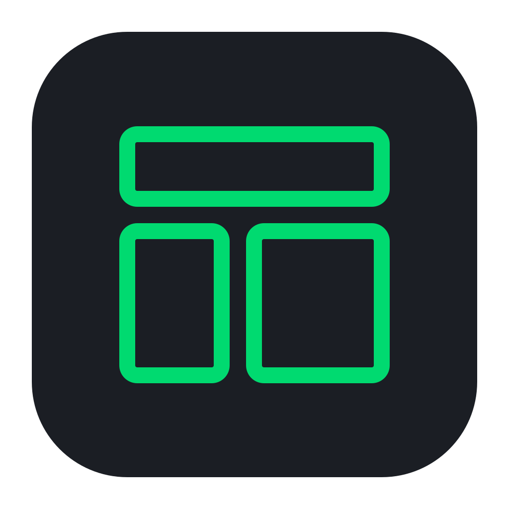
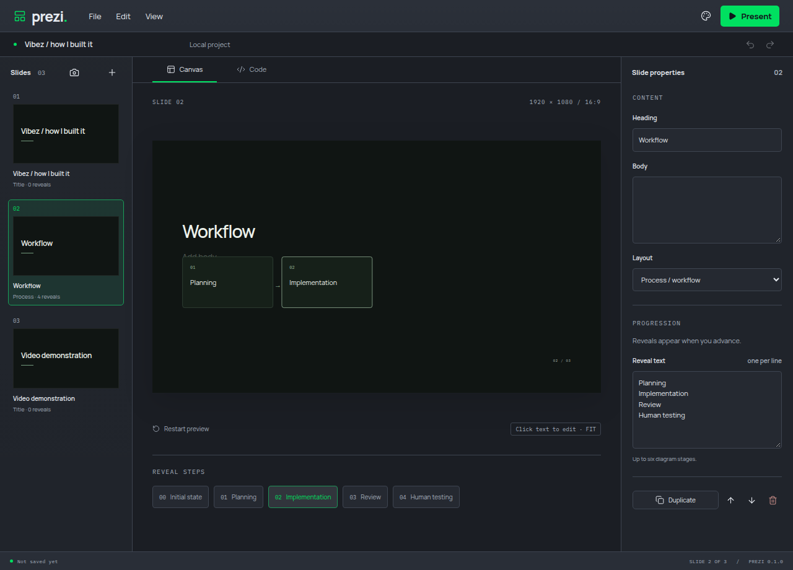
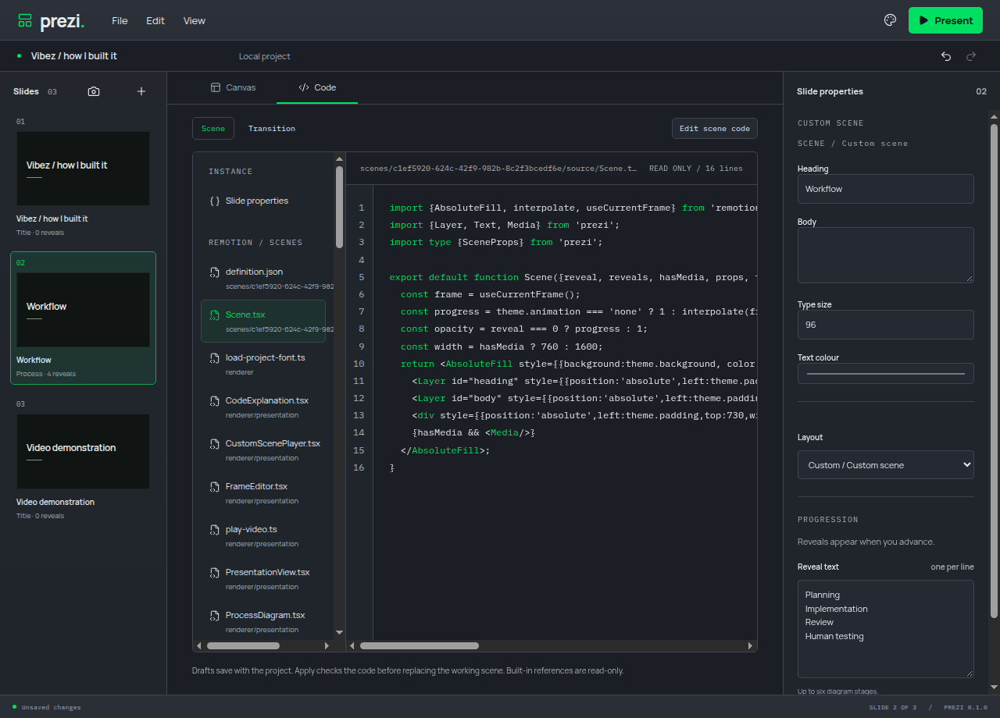
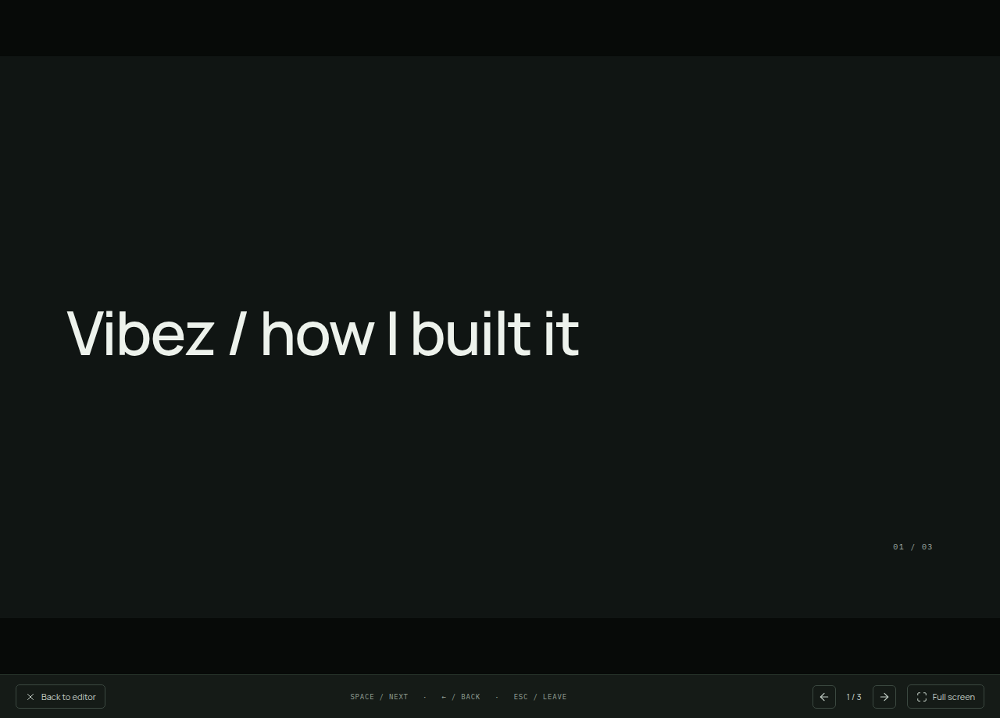

Canvas editing
Type directly on a slide. Move and resize media on the canvas, use the inspector for exact values, and arrange slides in the rail.

PreziA local desktop presentation editor built with Remotion.
Edit text and media on the canvas, write animated scenes in React and TypeScript, and
advance each reveal when you’re ready. Your deck, source, media and fonts stay together
in a portable .prezi project.
Use it for demos, code walkthroughs and narrated explanations. Present live or capture your screen with OBS or another recorder. Ordinary editing and playback run locally, without an account.

Type directly on a slide. Move and resize media on the canvas, use the inspector for exact values, and arrange slides in the rail.
Edit TSX source in Code view, expose properties to the inspector, and program scenes or transitions. Apply validates changes and retains the last working version if validation fails.
Advance reveals and slides with Space or the arrow keys. Video keeps playing while a reveal holds. Present in a window or in fullscreen.
A .prezi file contains the deck, source, media, fonts and notices. Move
it between computers and keep editing locally.
Connect an agent through Model Context Protocol (MCP). Its edits appear in the same canvas and project that you control.
Undo or redo your edits and agent changes. Each accepted agent batch is one history action, so its changes can be undone together.
Set slide colours, typography and motion in Presentation theme. Import project fonts, and choose the app’s light/dark mode and accent separately.
Linux AppImage and Windows installations can download verified updates and restart after protecting unsaved work. macOS installations use release downloads.
x64 · .exe
Download __WINDOWS_SIZE__Apple silicon · .dmg
Download __MAC_ARM_SIZE__Intel · .dmg
Download __MAC_INTEL_SIZE__x64 · AppImage
Download __LINUX_SIZE__Windows installers are unsigned. macOS apps are ad-hoc signed and not notarized.

